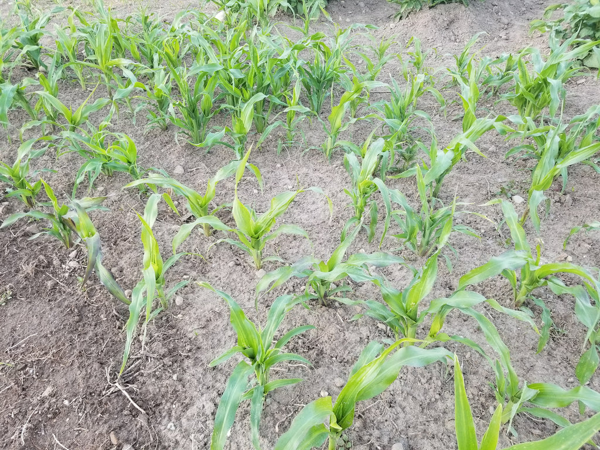
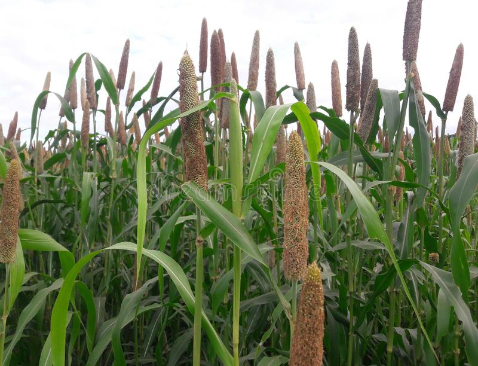
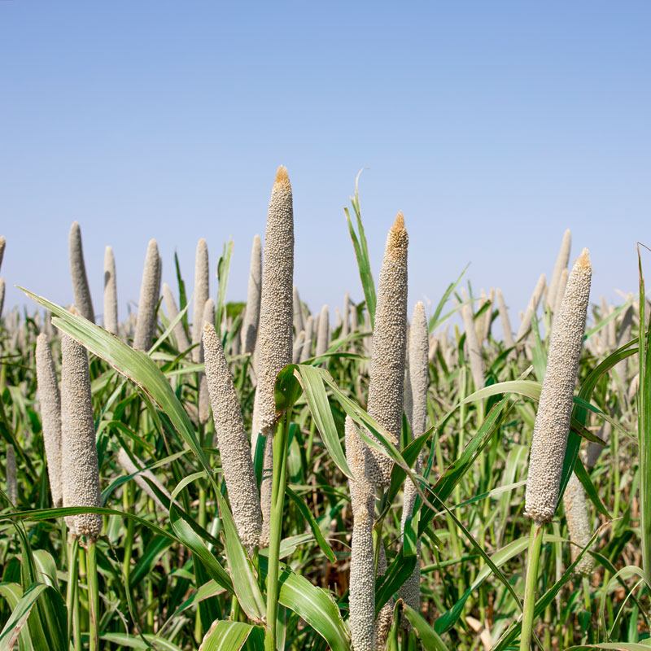
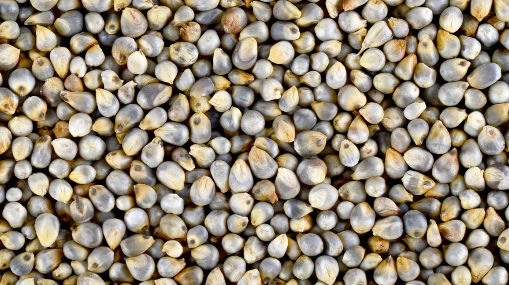
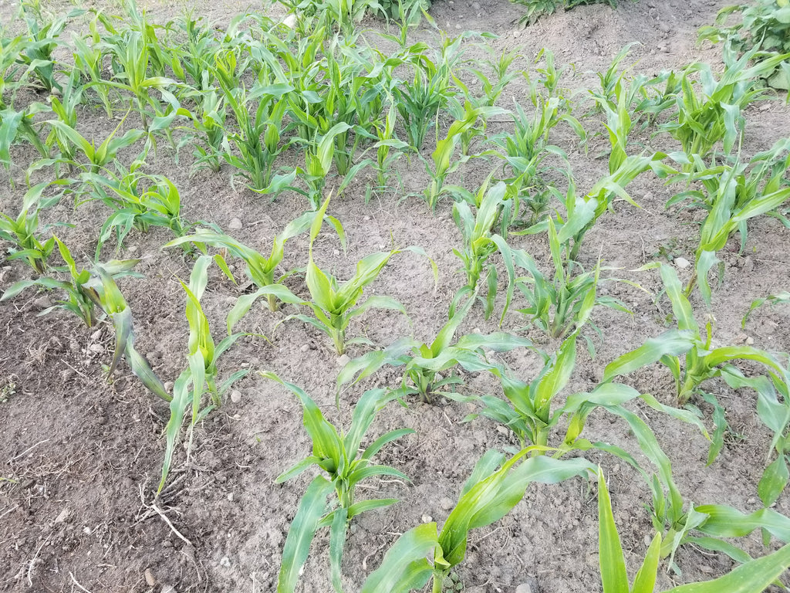
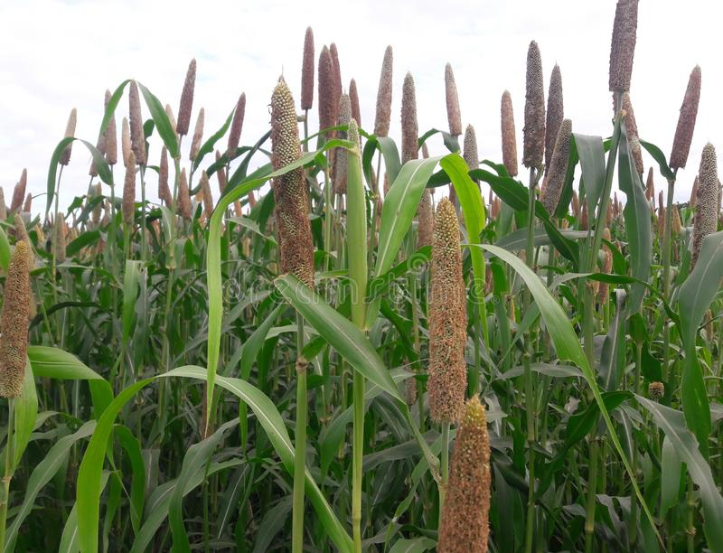
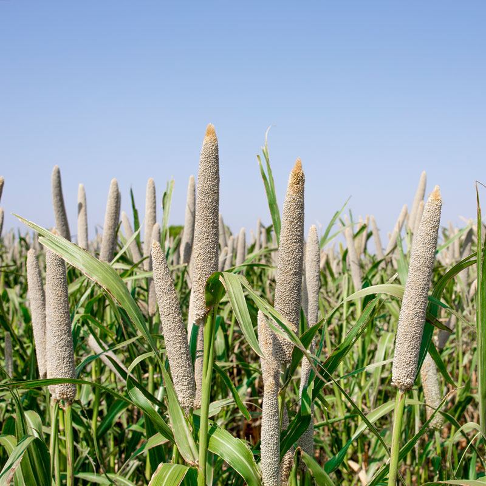
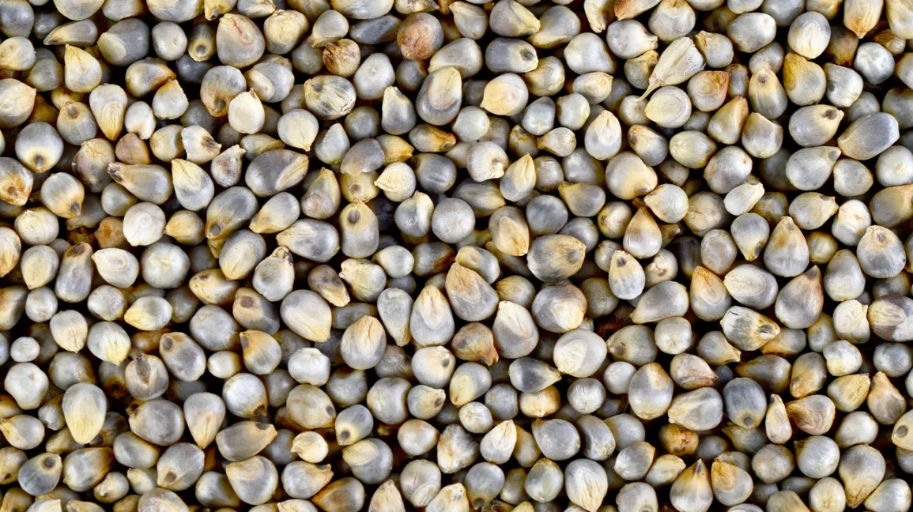

बाजरे की खेती और रोग रोकथाम
 







बाजरे की खेती (bajara ki kheti) के लिए गर्मी का मौसम उपयुक्त होता है। कम बारिश वाले क्षेत्र में इसकी पैदावार अधिक होती है।
अधिक बारिश वाले इलाकों में इसकी खेती से बचना चाहिए। जिन जगहों पर 40-60 सेंटीमीटर तक औसत बारिश होती है वहां इसकी अच्छी उपज होती है।
अगर बारिश निरन्तर होते रहती है तो सिंचाई की भी जरूरत नहीं पड़ती। तापमान 32से 37 सेल्सियस इस खेती के लिए अच्छा है।
उत्तर भारत में बाजरे की खेती (bajara ki kheti) करना चाहते हैं तो वहां इस खेती के लिए जुलाई का पहला सप्ताह अच्छा होता है।
जुलाई के अंत में बुआई करने से 40 से 50 किलोग्राम प्रति हेक्टेयर फसल का नुक़सान होता है। बुआई में 5 किलोग्राम प्रति हेक्टेयर बीज का इस्तेमाल करें।
अच्छी पैदावार के लिए फसलों की देखभाल करना भी बहुत आवश्यक है। जिसके लिए 1 से 15 किलोग्राम यूरिया डालें, लगभग 2 से 3 सप्ताह बाद पौधों की रोपाई मुख्य खेत में करनी चाहिए।
जब पौधों को क्यारियों से उखाड़ रहे हैं तो ध्यान रखें कि जड़ों को नुकसान ना पहुंचे। इसके अलावा नर्सरी में पर्याप्त नमी भी होना जरूरी है।
बाजरा की खेती (bajara ki kheti) में अधिक सिंचाई की आवश्यकता नहीं होती है। बारिश नहीं होने पर 10-15 दिनों के अंतराल पर सिंचाई जरूर करें।
ध्यान रहे पौधों में जब फूल और जब दाना बन रहा हो तो खेत में नमी की मात्रा कम न हो। जलभराव की समस्या हो तो जल निकासी का समुचित प्रबंध कर दें।
बाजरे में लगने वाले कीट व रोग और उसका प्रबंधन
दीमक
दीमक से बचने के लिए 2 किलोग्राम प्रति हेक्टेयर की दर से क्लोरोपाइरीफॉस का पौधों की जड़ों में छिड़काव करें इसके अलावा हल्की वर्षा के समय मिट्टी में मिला कर बिखेर दें।
तना मक्खी कीट
यह मक्खियां पौधों को बढ़ने से रोकती है। जैसे ही पौधे बड़े होने लगते हैं उन्हें काट देती है। जिसके कारण पौधे सूख जाते हैं।
इससे बचाव के लिए प्रति हेक्टेयर की दर से फॉरेट या 25 किलोग्राम प्रति हेक्टेयर या 25 किलोग्राम प्रति हेक्टेयर मेलाथियान खेत में डालना चाहिए।
सफेद लट
इस तरह के कीड़े पौधों की जड़ों को काटकर फसल को बर्बाद कर देते हैं। इससे बचाव के लिए फ्युराडॉन 3% या फोरेट 10प्रतिशत की बुआई के समय मिट्टी में डालना चाहिए।
रोग प्रबंधन
अर्गट
इस रोग से बचाव के लिए फसल की बुआई सही समय पर करें।
प्रमाणित बीज का ही प्रयोग करें। जो पौधे खराब हो चुके हैं उनको हटा दें।
इस बीमारी से बचाव के लिए बीजों को 10 प्रतिशत नमक के घोल में डालकर अलग कर देना चाहिए। उसके बाद बीजों को धोकर साफ करें तथा सुखाकर बुवाई करें।
बीजों को 2 ग्राम प्रति किलोग्राम बीज की दर से बाविस्टीन द्वारा उपचारित करके बोएं।
खड़ी फसल में रोग की रोकथाम के लिए बाविस्टिन 0.1 प्रतिशत या जिराम 0.1 प्रतिशत का 2 से 3 बार छिड़काव करें।